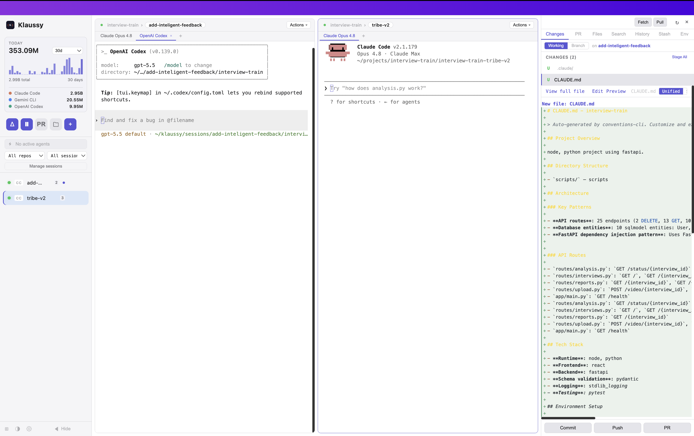

Early access
KLAUSSY
Run Claude Code across every worktree.
In one window.
For the 20× developer.
Klaussy is a desktop app for macOS, Windows, and Linux that orchestrates multiple Claude Code sessions across git worktrees, reviews pull requests with AI, and offers tab-autocomplete from a local model — nothing per-keystroke ever leaves your machine.
Free to try. $39 lifetime access unlocks an access key for every platform.
What it does
Parallel worktrees, one view
Spawn a worktree per task, each with its own Claude Code instance. Columns, grid, or single-pane view. Switch with a click; no more juggling cds.
Auto-debug CI failures
Klaussy connects to your PR's CI checks. When one goes red, pull the logs in with a click and Claude runs a focused debug pass — likely cause, suggested fix, applied straight to the worktree.
Full PR review surface
Pull in a PR, read the diff with inline comments, run an AI review that breaks into per-finding cards — ignore, implement, or append to PR.
Plan · Debug · Review
A dropdown on every worktree that spawns a dedicated Claude tab running /ultraplan, /debug, or a multi-phase PR review — each on the same worktree, no context loss.
Inline AI — locally
Tab-autocomplete as you type, powered by qwen2.5-coder running on your machine via Ollama. ~100ms latency. No code leaves your laptop.
Built-in editor
Monaco editor with LSP diagnostics. Open any file, edit, commit straight from the diff panel. AI-generated commit messages optional.
See it in action
Left: a Review action running on one worktree. Middle: another worktree idling. Right: a live GitHub PR with inline comment threads and a review composer.

What you need
- macOS 12 (Monterey) or later — Apple Silicon or Intel — Windows 10/11, or Ubuntu 22.04+ (other modern Linux distros generally work).
- Claude Code CLI installed and authenticated. Klaussy orchestrates
claude— it doesn't replace it. - GitHub CLI (gh) authenticated. Required for PR review features.
- Ollama (optional). Only needed if you opt into local inline autocomplete. On macOS, Klaussy can install it via Homebrew; on Windows/Linux, install from ollama.com.
Lifetime access
One-time purchase. Unlocks an access key that works on macOS, Windows, and Linux — and includes every future update.
Founder
$39
One developer. Lifetime.
- Access key for macOS, Windows, and Linux
- All future updates included
- Early-access price — rises to $69, then $99
Team — Small
$349
3 seats. Lifetime.
- 3 access keys for your team
- All future updates included
- One invoice for the whole team
Team — Large
$599
10 seats. Lifetime.
- 10 access keys for your team
- All future updates included
- One invoice for the whole team
Klaussy is free to download and try. An access key is required to keep using it past the trial.
FAQ
Does my code get sent to third parties?
When you use Claude features, prompts + repo context go to Anthropic via the claude CLI you already trust. GitHub operations go through your local gh. Inline autocomplete runs entirely locally via Ollama and qwen2.5-coder:1.5b — nothing per-keystroke leaves your machine. We don't run a server of our own.
Do I need a Claude subscription?
You need whatever plan your claude CLI is configured for. Klaussy doesn't bill separately for AI usage — your purchase is a one-time license for the app itself.
How does the access key work?
After purchase you'll receive a license key. Paste it into Klaussy → Settings → License once, on any of your machines. The key is tied to you, not to a single OS — the same key activates Klaussy on macOS, Windows, and Linux.
What does “lifetime” mean here?
One-time payment, no subscription. You get every future update to Klaussy at no extra cost for as long as the app exists. AI usage (Claude, GitHub) still runs on your own accounts.
Which platforms are supported?
macOS 12+ (Apple Silicon and Intel), Windows 10/11, and Ubuntu 22.04+ (other modern Linux distros generally work). All builds are signed where the platform supports it.
Why the 2 GB download prompt for inline autocomplete?
~500 MB is Ollama's runtime; ~1 GB is the qwen2.5-coder:1.5b model weights. You only see this prompt if you opt in — otherwise a free word-based completer handles Tab.
What happens to my data if I uninstall?
On macOS, remove ~/Library/Application Support/Klaussy and ~/Library/Logs/Klaussy. On Windows, remove %APPDATA%\Klaussy. On Linux, remove ~/.config/Klaussy and ~/.local/share/Klaussy. Ollama and its models persist independently — uninstall it through your package manager and remove ~/.ollama.
Is this open source?
The application itself is commercial, closed-source. Feedback and bug reports live in a public repo (this one). The bundled open-source components are listed in About → Licenses.
Get the beta.
macOS, Windows, Linux. Free to try — $39 lifetime access unlocks an access key for every platform.
Download Klaussy